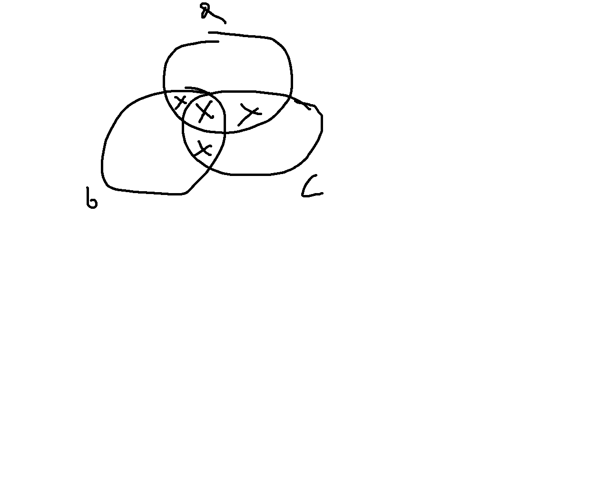
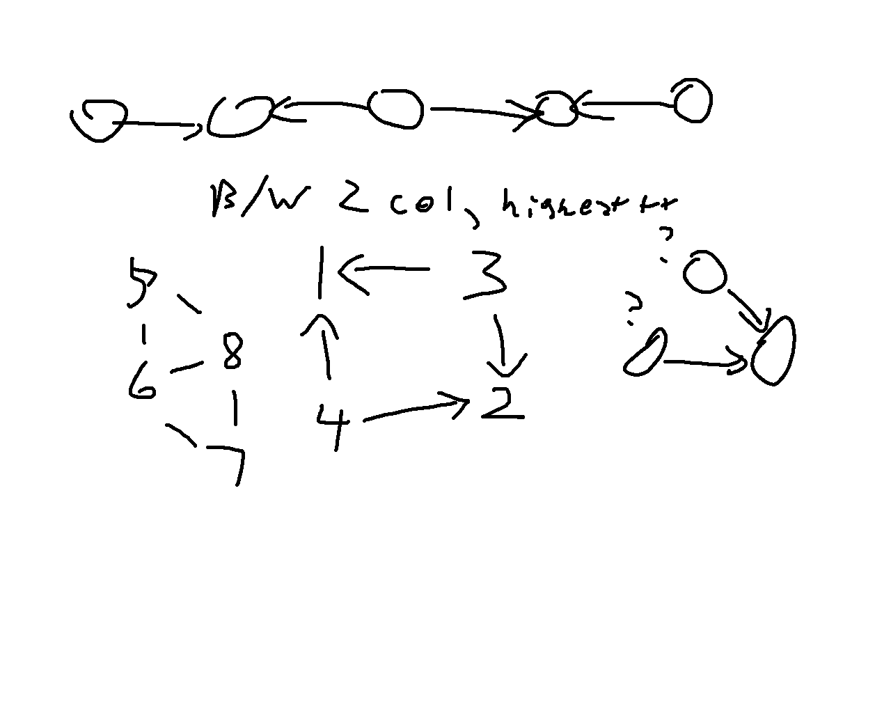
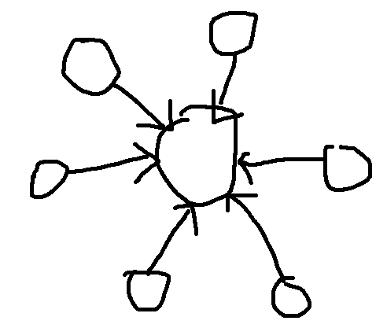

This post is up today solely to let you all know I’m currently in Orlando for the ICPC NA Championships. As of posting this, said competition is happening in roughly 14 hours, and I would’ve spent more time writing this properly, but this recap had to go up at some point. Also that I’ve been on dashboard in the last long bit and that there was a genuine 16 day gap since LC Weekly 491.
Solved Problems
A: Passing the Ball
This problem could be simulated given the constraints. Eventual solution I ended up with was the following:
- If the first character is
R, then keep traversing the string until anLis found. The ball would then be passed through all theseRs to theLand then a back-and-forth passing pattern occurs. - Otherwise, traverse the string backwards until a
Ris found, then the same back-and-forth pass pattern occurs.
B: Right Maximum
Part of educational contests I find in the earlier problems is that it is practice for ‘trial and error’ type solving, ie. making a bunch of small testcases, solving them manually, finding the pattern, and then implementing the solution. In this case, I tried roughly the following sequence of sequences:
1 1 1 1 1 returns 5
1 2 3 4 5 returns 5
5 4 3 2 1 returns 1
1 1 2 2 3 returns 5
2 1 2 3 1 returns 3
2 2 3 returns 3From these samples, it appeared that the method was to traverse left to right, and any time you find a value that is at least tied for the highest so far, add 1 to the answer.
C: Spring
- Venn diagram for inclusion/exclusion
- There are more routine methods to this I’m pretty sure (if there were 10 people this would be a problem) but this suffices.
- Considered further complexion like https://codeforces.com/blog/entry/64625
- Also a general rule of add odds and subtract evens when subset counting, would not really apply here I think?

In this case making a diagram to manually compute the size of each of the 8 sections is easiest. We can define 7 constants a, b, c, ab, bc, ac, abc to indicate the number of days where the people indicated by the characters (e.g. ab is for Alice and Bob) are at the spring. Note that a also includes cases where other people than Alice are at the spring, but we’ll deal with that complication later. Computing a, b, and c is just n//a/n//b/n//c respectively. The rest involve taking the lcm (least common multiple, ie. for ab, the smallest value x such that x % a = 0 and x % b = 0) of the indicated people.
The easiest method in Python is to just use from math import lcm. If you forget this then you could use the Euclidian Algorithm to compute gcd first, which in a nutshell is that you replace the larger of two values you are taking the gcd for with the remainder when divided by the smaller number until one of the values is 0. For instance, gcd(720,200) = gcd(120,200) = gcd(120,80) = gcd(40,80) = gcd(40,0) = 40. Then lcm is computable via gcd(a,b) * lcm(a,b) = a*b, to which the proof is left as an exercise to the reader. (Hint: consider the prime factorizations of a and b.)
Once you have the 7 constants, it’s then a careful setup of adding and subtracting them to obtain the 7 individual segments in the Venn diagram above.
import sys
from math import lcm
#input functions
readint = lambda: int(sys.stdin.readline())
readints = lambda: map(int,sys.stdin.readline().split())
readar = lambda: list(map(int,sys.stdin.readline().split()))
flush = lambda: sys.stdout.flush()
readin = lambda: sys.stdin.readline()[:-1]
readins = lambda: map(str,sys.stdin.readline().split())
for _ in range(readint()):
a,b,c,m = readints()
# Computing the 7 constants
ao = m//a
bo = m//b
co = m//c
ab = m//lcm(a,b)
ac = m//lcm(a,c)
bc = m//lcm(b,c)
abc = m//lcm(a,b,c)
# Considering each section of the Venn diagram
ansa,ansb,ansc = abc*2,abc*2,abc*2 # Case a, b, and c are at the spring
# Cases where only two people are at the spring
ansa += 3*(ab+ac-(2*abc))
ansb += 3*(ab+bc-(2*abc))
ansc += 3*(bc+ac-(2*abc))
# Cases where only one person is at the spring
ansa += 6*(ao-ab-ac+abc)
ansb += 6*(bo-ab-bc+abc)
ansc += 6*(co-bc-ac+abc)
print(ansa,ansb,ansc)D: Alternating Path
In this case, much of the visual notes I wrote provide my thought process more clearly:

I immediately considered 2 colouring of the graph (checking if a graph segment’s vertices can be coloured black and white such that no edge has it’s nodes with the same colour) because if a triangle exists (or just any odd length cycle), there is no chance any node in that connected component can be beautiful.
I initally coded up a solution where it just assumed all nodes in connected components with valid 2-colourings were beautiful only to find it failed sample cases, that’s where the middle drawing comes into play. From here due to rushing I just assumed the maximum number of beautiful nodes in a connected component of n nodes was
(n+1)//2.After that WA, then I determined the sun graph is a counter example:

- From there it was just tracking how many nodes of each colour were in the component and choosing the higher value.
E: Sum of Digits (and Again)
“It is always possible to rearrange the digits to the constraints.”
This is a very strange addition to the problem statement as there are cases where a set of digits could not be rearranged in such a way such as 999. Thus this entire thought process assumes there is a solution. First thing I did was compute the frequencies of each digit since they were being rearranged anyways. Then since this is a constructive problem (ie. any sort of problem that involves constructing a valid solution, post about constructive problems coming eventually) I then started considering the constraints of the sequence. There are at most 100000 digits, thus the maximum sum of these digits can only be 900000. At this point it is clear that whatever this sequence could be, it can’t be that long; as an example, number with digit sum 899999 -> 899999 -> 53 -> 8 is only a length 4 sequence, and the longest length of a sequence under these constraints could only be around 5. More importantly, we can then compute the digit sum of each sequence that starts from an integer of at most 900000, and then computing one more hypothetical step in a chain is simple. Then for a chain, the only two conditions to check are if the digit sum of a chain matches the digit sum of the given digits, and if we have the specific digits necessary to build the ending of the chain. The remaining digits can then be rearranged in decreasing order to guarantee a valid number.
All of this is probably better explained via example. Suppose we have a number 8989593990123456789...987654321 which has a digit sum of 900068. We can then determine that this can be rearranged into some form 9999...111000000899999538 based on the two conditions:
A chain starting at 899999 will require a digit sum of 900068 by these computations:
- Initial value with digit sum 899999 -> 899999
- 8 + 9 + 9 + 9 + 9 + 9 = 53
- 5 + 3 = 8
- 8 (needed to end the chain on a single digit)
- 899999 + 53 + 8 + 8 = 900068
To build the above chain, the digits in 899999 -> 53 -> 8 are required to be in the string.The first part can be optimized heavily using a dictionary to store the sums. The distribution of chain sums is even enough that there is no significant concern of having multiple possible chains on the same sum. The second part is then computable fast enough by using a hashmap and reconstructing the chain; each chain has at most 5 values, so while traditional Big-O complexity computation is somewhat difficult, we can reasonably assume this is at most \(O(\log n)\), which is generally the criteria used for considering it a “fast” operation.
The other thing notable in my approach to this problem is that I initially considered a potentially faster (but also much more error prone) making a smaller setup where only the chains up to 53 were stored; in this case I would then have to consider if there was 1 or 2 extra values to be added in an answer chain. That method was dropped for the final approach as initial implementation of the 900000 chain approach also precomputed step 2 for EVERY chain, which gave me initial concerns of TLE as this took about 5 seconds on my computer. Since there are only 100000 strings in each test case at most (realistically 50000 since single digit strings are a base case), it is more efficient to not precompute these.
Unsolved Problems
F: Sum of Fractions
I ended up attempting the next problem much more seriously under the assumption that I had a better chance of solving G than F. Post contest statistics via CLIST show that this problem’s effective rating was 2238 while G was 2620, so there was a significant difficulty gap. Then again, knowing how I have a low success rate on 2200+ problems to begin with, I think I made the right decision purely on the basis that my first part of the struggle was just figuring out how to track the most optimal use of the operations for a given \(k\). It’s not entirely greedy because suppose for the fraction 1/100, if k = 10, then the greedy option is correct to just change this to 11/100. But if k = 100, then doing the short-term ‘best’ move on each operation only results in 101/100 while the optimal fraction would be 2/1.
G: Grid Path
Both of my attempts tried a matrix exponentiation idea, mostly because the setup of this problem felt familiar to one of the methods used for fast Fibonacci computation. The first attempt could be summed up as the following:
- Design an enumeration for all the possible row colourings, being the tiles from \(i\) to \(j\) where \(1 \leq i \leq j \leq n\).
- Compute the matrix \(M_1\) for transforming from any row to the next subsequent row. Suppose row \(a\), column \(b\) represents the connection between a row colouring from \((a_1,a_2)\) to a row colouring from \((b_1,b_2)\). If row colouring \((a_1,a_2)\) overlaps with \((b_1,b_2)\), \(M_1[a][b] = 1\) else \(M_1[a][b] = 0\).
- Binary exponentiation can then be used to compute \(M_2, M_4, M_8, M_{16}, ...\). Multiplying a specific combination of these can determine \(M_{N-1}\).
- A base matrix \(B\) can be constructed for the first row by only setting the row colourings cells where \(i = 1\) to 1. This step I only partially implemented before realizing there would be a time complexity issue, but had this worked, the answer would have been the sum of the values in \(BM_{n-1}\).
There is a significant problem in runtime here which is why I ended up changing my approach. Matrix multiplication itself is \(O(n^3)\) for competitive programming purposes, but in this case, the size of my matrix relative to \(n\) is \(O(m^2)\). Combined with binary exponentiation, this means even if I had completed the implementation, the time complexity would be the unusual \(O(m^6 \log n)\), and this is insufficient for \(m = 150\). What then proceeded to occur was a very scuffed attempt at reducing the matrix part to a m by m matrix \(O(m^3 \log n)\), which also wasn’t actual matrix multiplication but some fancy dp attempt that was somehow drastically overcounting.
Contest Reflection
Going for G in retrospect was a fairly strange decision that looking at it might have been impulsive. This situation of starting a harder problem just because it looks more approachable is actually quite common in competitive programming, and from some talks at the NAC programming camps, I can definitely show some examples in the next post. Going back to the recap summary, I did solve 5 problems, even if D was a sub 1400-rated problem which I don’t remember happening very recently, so at the very least, the consistency looks to be back for the NAC tomorrow.